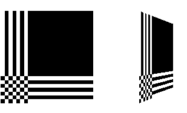

Chapter 9
Texture Mapping
Chapter Objectives
After reading this chapter, you'll be able to do the following:
- Understand what texture mapping can add to your scene
- Specify a texture image
- Control how a texture image is filtered as it's applied to a fragment
- Create and manage texture images in texture objects and, if available, control a high-performance working set of those texture objects
- Specify how the color values in the image combine with those of the fragment to which it's being applied
- Supply texture coordinates to indicate how the texture image should be aligned to the objects in your scene
- Use automatic texture coordinate generation to produce effects like contour maps and environment maps
So far, every geometric primitive has been drawn as either a solid color or smoothly shaded between the colors at its vertices - that is, they've been drawn without texture mapping. If you want to draw a large brick wall without texture mapping, for example, each brick must be drawn as a separate polygon. Without texturing, a large flat wall - which is really a single rectangle - might require thousands of individual bricks, and even then the bricks may appear too smooth and regular to be realistic.
Texture mapping allows you to glue an image of a brick wall (obtained, perhaps, by scanning in a photograph of a real wall) to a polygon and to draw the entire wall as a single polygon. Texture mapping ensures that all the right things happen as the polygon is transformed and rendered. For example, when the wall is viewed in perspective, the bricks may appear smaller as the wall gets farther from the viewpoint. Other uses for texture mapping include depicting vegetation on large polygons representing the ground in flight simulation; wallpaper patterns; and textures that make polygons look like natural substances such as marble, wood, or cloth. The possibilities are endless. Although it's most natural to think of applying textures to polygons, textures can be applied to all primitives - points, lines, polygons, bitmaps, and images. Plates 6, 8, 1821, 2427, and 2931 all demonstrate the use of textures.
Because there are so many possibilities, texture mapping is a fairly large, complex subject, and you must make several programming choices when using it. For instance, you can map textures to surfaces made of a set of polygons or to curved surfaces, and you can repeat a texture in one or both directions to cover the surface. A texture can even be one-dimensional. In addition, you can automatically map a texture onto an object in such a way that the texture indicates contours or other properties of the item being viewed. Shiny objects can be textured so that they appear to be in the center of a room or other environment, reflecting the surroundings off their surfaces. Finally, a texture can be applied to a surface in different ways. It can be painted on directly (like a decal placed on a surface), used to modulate the color the surface would have been painted otherwise, or used to blend a texture color with the surface color. If this is your first exposure to texture mapping, you might find that the discussion in this chapter moves fairly quickly. As an additional reference, you might look at the chapter on texture mapping in Fundamentals of Three-Dimensional Computer Graphics by Alan Watt (Reading, MA: Addison-Wesley Publishing Company, 1990).
Textures are simply rectangular arrays of data - for example, color data, luminance data, or color and alpha data. The individual values in a texture array are often called texels. What makes texture mapping tricky is that a rectangular texture can be mapped to nonrectangular regions, and this must be done in a reasonable way.
Figure 9-1 illustrates the texture-mapping process. The left side of the figure represents the entire texture, and the black outline represents a quadrilateral shape whose corners are mapped to those spots on the texture. When the quadrilateral is displayed on the screen, it might be distorted by applying various transformations - rotations, translations, scaling, and projections. The right side of the figure shows how the texture-mapped quadrilateral might appear on your screen after these transformations. (Note that this quadrilateral is concave and might not be rendered correctly by OpenGL without prior tessellation. See Chapter 11 for more information about tessellating polygons.)
Figure 9-1 : Texture-Mapping Process
Notice how the texture is distorted to match the distortion of the quadrilateral. In this case, it's stretched in the x direction and compressed in the y direction; there's a bit of rotation and shearing going on as well. Depending on the texture size, the quadrilateral's distortion, and the size of the screen image, some of the texels might be mapped to more than one fragment, and some fragments might be covered by multiple texels. Since the texture is made up of discrete texels (in this case, 256 ´
256 of them), filtering operations must be performed to map texels to fragments. For example, if many texels correspond to a fragment, they're averaged down to fit; if texel boundaries fall across fragment boundaries, a weighted average of the applicable texels is performed. Because of these calculations, texturing is computationally expensive, which is why many specialized graphics systems include hardware support for texture mapping.
An application may establish texture objects, with each texture object representing a single texture (and possible associated mipmaps). Some implementations of OpenGL can support a special working set of texture objects that have better performance than texture objects outside the working set. These high-performance texture objects are said to be resident and may have special hardware and/or software acceleration available. You may use OpenGL to create and delete texture objects and to determine which textures constitute your working set.
This chapter covers the OpenGL's texture-mapping facility in the following major sections.
- "An Overview and an Example" gives a brief, broad look at the steps required to perform texture mapping. It also presents a relatively simple example of texture mapping.
- "Specifying the Texture" explains how to specify one- or two-dimensional textures. It also discusses how to use a texture's borders, how to supply a series of related textures of different sizes, and how to control the filtering methods used to determine how an applied texture is mapped to screen coordinates.
- "Filtering" details how textures are either magnified or minified as they are applied to the pixels of polygons. Minification using special mipmap textures is also explained.
- "Texture Objects" describes how to put texture images into objects so that you can control several textures at one time. With texture objects, you may be able to create a working set of high-performance textures, which are said to be resident. You may also prioritize texture objects to increase or decrease the likelihood that a texture object is resident.
- "Texture Functions" discusses the methods used for painting a texture onto a surface. You can choose to have the texture color values replace those that would be used if texturing wasn't in effect, or you can have the final color be a combination of the two.
- "Assigning Texture Coordinates" describes how to compute and assign appropriate texture coordinates to the vertices of an object. It also explains how to control the behavior of coordinates that lie outside the default range - that is, how to repeat or clamp textures across a surface.
- "Automatic Texture-Coordinate Generation" shows how to have OpenGL automatically generate texture coordinates so that you can achieve such effects as contour and environment maps.
- "Advanced Features" explains how to manipulate the texture matrix stack and how to use the q texture coordinate.
Version 1.1 of OpenGL introduces several new texture-mapping operations:
- Thirty-eight additional internal texture image formats
- Texture proxy, to query whether there are enough resources to accommodate a given texture image
- Texture subimage, to replace all or part of an existing texture image rather than completely deleting and creating a texture to achieve the same effect
- Specifying texture data from framebuffer memory (as well as from processor memory)
- Texture objects, including resident textures and prioritizing
If you try to use one of these texture-mapping operations and can't find it, check the version number of your implementation of OpenGL to see if it actually supports it. (See "Which Version Am I Using?" in Chapter 14.)
An Overview and an Example
This section gives an overview of the steps necessary to perform texture mapping. It also presents a relatively simple texture-mapping program. Of course, you know that texture mapping can be a very involved process.
Steps in Texture Mapping
To use texture mapping, you perform these steps.
Create a texture object and specify a texture for that object.
Indicate how the texture is to be applied to each pixel.
Enable texture mapping.
Draw the scene, supplying both texture and geometric coordinates.
Keep in mind that texture mapping works only in RGBA mode. Texture mapping results in color-index mode are undefined.
Create a Texture Object and Specify a Texture for That Object
A texture is usually thought of as being two-dimensional, like most images, but it can also be one-dimensional. The data describing a texture may consist of one, two, three, or four elements per texel, representing anything from a modulation constant to an (R, G, B, A) quadruple.
In Example 9-1, which is very simple, a single texture object is created to maintain a single two-dimensional texture. This example does not find out how much memory is available. Since only one texture is created, there is no attempt to prioritize or otherwise manage a working set of texture objects. Other advanced techniques, such as texture borders or mipmaps, are not used in this simple example.
Indicate How the Texture Is to Be Applied to Each Pixel
You can choose any of four possible functions for computing the final RGBA value from the fragment color and the texture-image data. One possibility is simply to use the texture color as the final color; this is the decal mode, in which the texture is painted on top of the fragment, just as a decal would be applied. (Example 9-1 uses decal mode.) The replace mode, a variant of the decal mode, is a second method. Another method is to use the texture to modulate, or scale, the fragment's color; this technique is useful for combining the effects of lighting with texturing. Finally, a constant color can be blended with that of the fragment, based on the texture value.
Enable Texture Mapping
You need to enable texturing before drawing your scene. Texturing is enabled or disabled using glEnable() or glDisable() with the symbolic constant GL_TEXTURE_1D or GL_TEXTURE_2D for one- or two-dimensional texturing, respectively. (If both are enabled, GL_TEXTURE_2D is the one that is used.)
Draw the Scene, Supplying Both Texture and Geometric Coordinates
You need to indicate how the texture should be aligned relative to the fragments to which it's to be applied before it's "glued on." That is, you need to specify both texture coordinates and geometric coordinates as you specify the objects in your scene. For a two-dimensional texture map, for example, the texture coordinates range from 0.0 to 1.0 in both directions, but the coordinates of the items being textured can be anything. For the brick-wall example, if the wall is square and meant to represent one copy of the texture, the code would probably assign texture coordinates (0, 0), (1, 0), (1, 1), and (0, 1) to the four corners of the wall. If the wall is large, you might want to paint several copies of the texture map on it. If you do so, the texture map must be designed so that the bricks on the left edge match up nicely with the bricks on the right edge, and similarly for the bricks on the top and those on the bottom.
You must also indicate how texture coordinates outside the range [0.0,1.0] should be treated. Do the textures repeat to cover the object, or are they clamped to a boundary value?
A Sample Program
One of the problems with showing sample programs to illustrate texture mapping is that interesting textures are large. Typically, textures are read from an image file, since specifying a texture programmatically could take hundreds of lines of code. In Example 9-1, the texture - which consists of alternating white and black squares, like a checkerboard - is generated by the program. The program applies this texture to two squares, which are then rendered in perspective, one of them facing the viewer squarely and the other tilting back at 45 degrees, as shown in Figure 9-2. In object coordinates, both squares are the same size.
Figure 9-2 : Texture-Mapped Squares
Example 9-1 : Texture-Mapped Checkerboard: checker.c
#include <GL/gl.h>
#include <GL/glu.h>
#include <GL/glut.h>
#include <stdlib.h>
#include <stdio.h>
/* Create checkerboard texture */
#define checkImageWidth 64
#define checkImageHeight 64
static GLubyte checkImage[checkImageHeight][checkImageWidth][4];
static GLuint texName;
void makeCheckImage(void)
{
int i, j, c;
for (i = 0; i < checkImageHeight; i++) {
for (j = 0; j < checkImageWidth; j++) {
c = ((((i&0x8)==0)^((j&0x8))==0))*255;
checkImage[i][j][0] = (GLubyte) c;
checkImage[i][j][1] = (GLubyte) c;
checkImage[i][j][2] = (GLubyte) c;
checkImage[i][j][3] = (GLubyte) 255;
}
}
}
void init(void)
{
glClearColor (0.0, 0.0, 0.0, 0.0);
glShadeModel(GL_FLAT);
glEnable(GL_DEPTH_TEST);
makeCheckImage();
glPixelStorei(GL_UNPACK_ALIGNMENT, 1);
glGenTextures(1, &texName);
glBindTexture(GL_TEXTURE_2D, texName);
glTexParameteri(GL_TEXTURE_2D, GL_TEXTURE_WRAP_S, GL_REPEAT);
glTexParameteri(GL_TEXTURE_2D, GL_TEXTURE_WRAP_T, GL_REPEAT);
glTexParameteri(GL_TEXTURE_2D, GL_TEXTURE_MAG_FILTER,
GL_NEAREST);
glTexParameteri(GL_TEXTURE_2D, GL_TEXTURE_MIN_FILTER,
GL_NEAREST);
glTexImage2D(GL_TEXTURE_2D, 0, GL_RGBA, checkImageWidth,
checkImageHeight, 0, GL_RGBA, GL_UNSIGNED_BYTE,
checkImage);
}
void display(void)
{
glClear(GL_COLOR_BUFFER_BIT | GL_DEPTH_BUFFER_BIT);
glEnable(GL_TEXTURE_2D);
glTexEnvf(GL_TEXTURE_ENV, GL_TEXTURE_ENV_MODE, GL_DECAL);
glBindTexture(GL_TEXTURE_2D, texName);
glBegin(GL_QUADS);
glTexCoord2f(0.0, 0.0); glVertex3f(-2.0, -1.0, 0.0);
glTexCoord2f(0.0, 1.0); glVertex3f(-2.0, 1.0, 0.0);
glTexCoord2f(1.0, 1.0); glVertex3f(0.0, 1.0, 0.0);
glTexCoord2f(1.0, 0.0); glVertex3f(0.0, -1.0, 0.0);
glTexCoord2f(0.0, 0.0); glVertex3f(1.0, -1.0, 0.0);
glTexCoord2f(0.0, 1.0); glVertex3f(1.0, 1.0, 0.0);
glTexCoord2f(1.0, 1.0); glVertex3f(2.41421, 1.0, -1.41421);
glTexCoord2f(1.0, 0.0); glVertex3f(2.41421, -1.0, -1.41421);
glEnd();
glFlush();
glDisable(GL_TEXTURE_2D);
}
void reshape(int w, int h)
{
glViewport(0, 0, (GLsizei) w, (GLsizei) h);
glMatrixMode(GL_PROJECTION);
glLoadIdentity();
gluPerspective(60.0, (GLfloat) w/(GLfloat) h, 1.0, 30.0);
glMatrixMode(GL_MODELVIEW);
glLoadIdentity();
glTranslatef(0.0, 0.0, -3.6);
}
void keyboard (unsigned char key, int x, int y)
{
switch (key) {
case 27:
exit(0);
break;
default:
break;
}
}
int main(int argc, char** argv)
{
glutInit(&argc, argv);
glutInitDisplayMode(GLUT_SINGLE | GLUT_RGB | GLUT_DEPTH);
glutInitWindowSize(250, 250);
glutInitWindowPosition(100, 100);
glutCreateWindow(argv[0]);
init();
glutDisplayFunc(display);
glutReshapeFunc(reshape);
glutKeyboardFunc(keyboard);
glutMainLoop();
return 0;
}
The checkerboard texture is generated in the routine makeCheckImage(), and all the texture-mapping initialization occurs in the routine init(). glGenTextures() and glBindTexture() name and create a texture object for a texture image. (See "Texture Objects.") The single, full-resolution texture map is specified by glTexImage2D(), whose parameters indicate the size of the image, type of the image, location of the image, and other properties of it. (See "Specifying the Texture" for more information about glTexImage2D().)
The four calls to glTexParameter*() specify how the texture is to be wrapped and how the colors are to be filtered if there isn't an exact match between pixels in the texture and pixels on the screen. (See "Repeating and Clamping Textures" and "Filtering.")
In display(), glEnable() turns on texturing. glTexEnv*() sets the drawing mode to GL_DECAL so that the textured polygons are drawn using the colors from the texture map (rather than taking into account what color the polygons would have been drawn without the texture).
Then, two polygons are drawn. Note that texture coordinates are specified along with vertex coordinates. The glTexCoord*() command behaves similarly to the glNormal() command. glTexCoord*() sets the current texture coordinates; any subsequent vertex command has those texture coordinates associated with it until glTexCoord*() is called again.
Note: The checkerboard image on the tilted polygon might look wrong when you compile and run it on your machine - for example, it might look like two triangles with different projections of the checkerboard image on them. If so, try setting the parameter GL_PERSPECTIVE_CORRECTION_HINT to GL_NICEST and running the example again. To do this, use glHint().
Specifying the Texture
The command glTexImage2D() defines a two-dimensional texture. It takes several arguments, which are described briefly here and in more detail in the subsections that follow. The related command for one-dimensional textures, glTexImage1D(), is described in "One-Dimensional Textures."
- void glTexImage2D(GLenum
target, GLint level, GLint internalFormat,
GLsizei width, GLsizei height, GLint border,
GLenum format, GLenum type,
const GLvoid *pixels);
Defines a two-dimensional texture. The target parameter is set to either the constant GL_TEXTURE_2D or GL_PROXY_TEXTURE_2D. You use the level parameter if you're supplying multiple resolutions of the texture map; with only one resolution, level should be 0. (See "Multiple Levels of Detail" for more information about using multiple resolutions.)
The next parameter, internalFormat, indicates which of the R, G, B, and A components or luminance or intensity values are selected for use in describing the texels of an image. The value of internalFormat is an integer from 1 to 4, or one of thirty-eight symbolic constants. The thirty-eight symbolic constants that are also legal values for internalFormat are GL_ALPHA, GL_ALPHA4, GL_ALPHA8, GL_ALPHA12, GL_ALPHA16, GL_LUMINANCE, GL_LUMINANCE4, GL_LUMINANCE8, GL_LUMINANCE12, GL_LUMINANCE16, GL_LUMINANCE_ALPHA, GL_LUMINANCE4_ALPHA4, GL_LUMINANCE6_ALPHA2, GL_LUMINANCE8_ALPHA8, GL_LUMINANCE12_ALPHA4, GL_LUMINANCE12_ALPHA12, GL_LUMINANCE16_ALPHA16, GL_INTENSITY, GL_INTENSITY4, GL_INTENSITY8, GL_INTENSITY12, GL_INTENSITY16, GL_RGB, GL_R3_G3_B2, GL_RGB4, GL_RGB5, GL_RGB8, GL_RGB10, GL_RGB12, GL_RGB16, GL_RGBA, GL_RGBA2, GL_RGBA4, GL_RGB5_A1, GL_RGBA8, GL_RGB10_A2, GL_RGBA12, and GL_RGBA16. (See "Texture Functions" for a discussion of how these selected components are applied.)
If internalFormat is one of the thirty-eight symbolic constants, then you are asking for specific components and perhaps the resolution of those components. For example, if internalFormat is GL_R3_G3_B2, you are asking that texels be 3 bits of red, 3 bits of green, and 2 bits of blue, but OpenGL is not guaranteed to deliver this. OpenGL is only obligated to choose an internal representation that closely approximates what is requested, but an exact match is usually not required. By definition, GL_LUMINANCE, GL_LUMINANCE_ALPHA, GL_RGB, and GL_RGBA are lenient, because they do not ask for a specific resolution. (For compatibility with the OpenGL release 1.0, the numeric values 1, 2, 3, and 4, for internalFormat, are equivalent to the symbolic constants GL_LUMINANCE, GL_LUMINANCE_ALPHA, GL_RGB, and GL_RGBA, respectively.)
The width and height parameters give the dimensions of the texture image; border indicates the width of the border, which is either zero (no border) or one. (See "Using a Texture's Borders".) Both width and height must have the form 2m+2b, where m is a nonnegative integer (which can have a different value for width than for height) and b is the value of border. The maximum size of a texture map depends on the implementation of OpenGL, but it must be at least 64 ´
64 (or 66 ´
66 with borders).
The format and type parameters describe the format and data type of the texture image data. They have the same meaning as they do for glDrawPixels(). (See "Imaging Pipeline" in Chapter 8.) In fact, texture data is in the same format as the data used by glDrawPixels(), so the settings of glPixelStore*() and glPixelTransfer*() are applied. (In Example 9-1, the call
glPixelStorei(GL_UNPACK_ALIGNMENT, 1);
is made because the data in the example isn't padded at the end of each texel row.) The format parameter can be GL_COLOR_INDEX, GL_RGB, GL_RGBA, GL_RED, GL_GREEN, GL_BLUE, GL_ALPHA, GL_LUMINANCE, or GL_LUMINANCE_ALPHA - that is, the same formats available for glDrawPixels() with the exceptions of GL_STENCIL_INDEX and GL_DEPTH_COMPONENT.
Similarly, the type parameter can be GL_BYTE, GL_UNSIGNED_BYTE, GL_SHORT, GL_UNSIGNED_SHORT, GL_INT, GL_UNSIGNED_INT, GL_FLOAT, or GL_BITMAP.
Finally, pixels contains the texture-image data. This data describes the texture image itself as well as its border.
The internal format of a texture image may affect the performance of texture operations. For example, some implementations perform texturing with GL_RGBA faster than GL_RGB, because the color components align the processor memory better. Since this varies, you should check specific information about your implementation of OpenGL.
The internal format of a texture image also may control how much memory a texture image consumes. For example, a texture of internal format GL_RGBA8 uses 32 bits per texel, while a texture of internal format GL_R3_G3_B2 only uses 8 bits per texel. Of course, there is a corresponding trade-off between memory consumption and color resolution.
Note: Although texture-mapping results in color-index mode are undefined, you can still specify a texture with a GL_COLOR_INDEX image. In that case, pixel-transfer operations are applied to convert the indices to RGBA values by table lookup before they're used to form the texture image.
The number of texels for both the width and height of a texture image, not including the optional border, must be a power of 2. If your original image does not have dimensions that fit that limitation, you can use the OpenGL Utility Library routine gluScaleImage() to alter the size of your textures.
- int gluScaleImage(GLenum
format, GLint widthin, GLint heightin,
GLenum typein, const void *datain, GLint widthout,
GLint heightout, GLenum typeout, void *dataout);
Scales an image using the appropriate pixel-storage modes to unpack the data from datain. The format, typein, and typeout parameters can refer to any of the formats or data types supported by glDrawPixels(). The image is scaled using linear interpolation and box filtering (from the size indicated by widthin and heightin to widthout and heightout), and the resulting image is written to dataout, using the pixel GL_PACK* storage modes. The caller of gluScaleImage() must allocate sufficient space for the output buffer. A value of 0 is returned on success, and a GLU error code is returned on failure.
The framebuffer itself can also be used as a source for texture data. glCopyTexImage2D() reads a rectangle of pixels from the framebuffer and uses it for a new texture.
- void glCopyTexImage2D(GLenum
target, GLint level,
GLint internalFormat,
GLint x, GLint y, GLsizei width, GLsizei height,
GLint border);
Creates a two-dimensional texture, using framebuffer data to define the texels. The pixels are read from the current GL_READ_BUFFER and are processed exactly as if glCopyPixels() had been called but stopped before final conversion. The settings of glPixelTransfer*() are applied.
The target parameter must be set to the constant GL_TEXTURE_2D. The level, internalFormat, and border parameters have the same effects that they have for glTexImage2D(). The texture array is taken from a screen-aligned pixel rectangle with the lower-left corner at coordinates specified by the (x, y) parameters. The width and height parameters specify the size of this pixel rectangle. Both width and height must have the form 2m+2b, where m is a nonnegative integer (which can have a different value for width than for height) and b is the value of border.
The next sections give more detail about texturing, including the use of the target, border, and level parameters. The target parameter can be used to accurately query the size of a texture (by creating a texture proxy with glTexImage*D()) and whether a texture possibly can be used within the texture resources of an OpenGL implementation. Redefining a portion of a texture is described in "Replacing All or Part of a Texture Image." One-dimensional textures are discussed in "One-Dimensional Textures." The texture border, which has its size controlled by the border parameter, is detailed in "Using a Texture's Borders." The level parameter is used to specify textures of different resolutions and is incorporated into the special technique of mipmapping, which is explained in "Multiple Levels of Detail." Mipmapping requires understanding how to filter textures as they're applied; filtering is the subject of "Filtering."
Texture Proxy
To an OpenGL programmer who uses textures, size is important. Texture resources are typically limited and vary among OpenGL implementations. There is a special texture proxy target to evaluate whether sufficient resources are available.
glGetIntegerv(GL_MAX_TEXTURE_SIZE,...) tells you the largest dimension (width or height, without borders) of a texture image, typically the size of the largest square texture supported. However, GL_MAX_TEXTURE_SIZE does not consider the effect of the internal format of a texture. A texture image that stores texels using the GL_RGBA16 internal format may be using 64 bits per texel, so its image may have to be 16 times smaller than an image with the GL_LUMINANCE4 internal format. (Also, images requiring borders or mipmaps may further reduce the amount of available memory.)
A special place holder, or proxy, for a texture image allows the program to query more accurately whether OpenGL can accommodate a texture of a desired internal format. To use the proxy to query OpenGL, call glTexImage2D() with a target parameter of GL_PROXY_TEXTURE_2D and the given level, internalFormat, width, height, border, format, and type. (For one-dimensional textures, use corresponding 1D routines and symbolic constants.) For a proxy, you should pass NULL as the pointer for the pixels array.
To find out whether there are enough resources available for your texture, after the texture proxy has been created, query the texture state variables with glGetTexLevelParameter*(). If there aren't enough resources to accommodate the texture proxy, the texture state variables for width, height, border width, and component resolutions are set to 0.
- void glGetTexLevelParameter{if}v(GLenum
target, GLint level,
GLenum pname, TYPE *params);
Returns in params texture parameter values for a specific level of detail, specified as level. target defines the target texture and is one of GL_TEXTURE_1D, GL_TEXTURE_2D, GL_PROXY_TEXTURE_1D, or GL_PROXY_TEXTURE_2D. Accepted values for pname are GL_TEXTURE_WIDTH, GL_TEXTURE_HEIGHT, GL_TEXTURE_BORDER, GL_TEXTURE_INTERNAL_FORMAT, GL_TEXTURE_RED_SIZE, GL_TEXTURE_GREEN_SIZE, GL_TEXTURE_BLUE_SIZE, GL_TEXTURE_ALPHA_SIZE, GL_TEXTURE_LUMINANCE_SIZE, or GL_TEXTURE_INTENSITY_SIZE.
GL_TEXTURE_COMPONENTS is also accepted for pname, but only for backward compatibility with OpenGL Release 1.0 - GL_TEXTURE_INTERNAL_FORMAT is the recommended symbolic constant for Release 1.1.
Example 9-2 demonstrates how to use the texture proxy to find out if there are enough resources to create a 64 ´
64 texel texture with RGBA components with 8 bits of resolution. If this succeeds, then glGetTexLevelParameteriv() stores the internal format (in this case, GL_RGBA8) into the variable format.
Example 9-2 : Querying Texture Resources with a Texture Proxy
GLint format;
glTexImage2D(GL_PROXY_TEXTURE_2D, 0, GL_RGBA8,
64, 64, 0, GL_RGBA, GL_UNSIGNED_BYTE, NULL);
glGetTexLevelParameteriv(GL_PROXY_TEXTURE_2D, 0,
GL_TEXTURE_INTERNAL_FORMAT, &format);
Note: There is one major limitation about texture proxies: The texture proxy tells you if there is space for your texture, but only if all texture resources are available (in other words, if it's the only texture in town). If other textures are using resources, then the texture proxy query may respond affirmatively, but there may not be enough space to make your texture resident (that is, part of a possibly high-performance working set of textures). (See "Texture Objects" for more information about managing resident textures.)
Replacing All or Part of a Texture Image
Creating a texture may be more computationally expensive than modifying an existing one. In OpenGL Release 1.1, there are new routines to replace all or part of a texture image with new information. This can be helpful for certain applications, such as using real-time, captured video images as texture images. For that application, it makes sense to create a single texture and use glTexSubImage2D() to repeatedly replace the texture data with new video images. Also, there are no size restrictions for glTexSubImage2D() that force the height or width to be a power of two. This is helpful for processing video images, which generally do not have sizes that are powers of two.
- void glTexSubImage2D(GLenum
target, GLint level, GLint xoffset,
GLint yoffset, GLsizei width, GLsizei height,
GLenum format, GLenum type, const GLvoid *pixels);
Defines a two-dimensional texture image that replaces all or part of a contiguous subregion (in 2D, it's simply a rectangle) of the current, existing two-dimensional texture image. The target parameter must be set to GL_TEXTURE_2D.
The level, format, and type parameters are similar to the ones used for glTexImage2D(). level is the mipmap level-of-detail number. It is not an error to specify a width or height of zero, but the subimage will have no effect. format and type describe the format and data type of the texture image data. The subimage is also affected by modes set by glPixelStore*() and glPixelTransfer*().
pixels contains the texture data for the subimage. width and height are the dimensions of the subregion that is replacing all or part of the current texture image. xoffset and yoffset specify the texel offset in the x and y directions (with (0, 0) at the lower-left corner of the texture) and specify where to put the subimage within the existing texture array. This region may not include any texels outside the range of the originally defined texture array.
In Example 9-3, some of the code from Example 9-1 has been modified so that pressing the `s' key drops a smaller checkered subimage into the existing image. (The resulting texture is shown in Figure 9-3.) Pressing the `r' key restores the original image. Example 9-3 shows the two routines, makeCheckImages() and keyboard(), that have been substantially changed. (See "Texture Objects" for more information about glBindTexture().)
Figure 9-3 : Texture with Subimage Added
Example 9-3 : Replacing a Texture Subimage: texsub.c
/* Create checkerboard textures */
#define checkImageWidth 64
#define checkImageHeight 64
#define subImageWidth 16
#define subImageHeight 16
static GLubyte checkImage[checkImageHeight][checkImageWidth][4];
static GLubyte subImage[subImageHeight][subImageWidth][4];
void makeCheckImages(void)
{
int i, j, c;
for (i = 0; i < checkImageHeight; i++) {
for (j = 0; j < checkImageWidth; j++) {
c = ((((i&0x8)==0)^((j&0x8))==0))*255;
checkImage[i][j][0] = (GLubyte) c;
checkImage[i][j][1] = (GLubyte) c;
checkImage[i][j][2] = (GLubyte) c;
checkImage[i][j][3] = (GLubyte) 255;
}
}
for (i = 0; i < subImageHeight; i++) {
for (j = 0; j < subImageWidth; j++) {
c = ((((i&0x4)==0)^((j&0x4))==0))*255;
subImage[i][j][0] = (GLubyte) c;
subImage[i][j][1] = (GLubyte) 0;
subImage[i][j][2] = (GLubyte) 0;
subImage[i][j][3] = (GLubyte) 255;
}
}
}
void keyboard (unsigned char key, int x, int y)
{
switch (key) {
case `s':
case `S':
glBindTexture(GL_TEXTURE_2D, texName);
glTexSubImage2D(GL_TEXTURE_2D, 0, 12, 44,
subImageWidth, subImageHeight, GL_RGBA,
GL_UNSIGNED_BYTE, subImage);
glutPostRedisplay();
break;
case `r':
case `R':
glBindTexture(GL_TEXTURE_2D, texName);
glTexImage2D(GL_TEXTURE_2D, 0, GL_RGBA,
checkImageWidth, checkImageHeight, 0,
GL_RGBA, GL_UNSIGNED_BYTE, checkImage);
glutPostRedisplay();
break;
case 27:
exit(0);
break;
default:
break;
}
}
Once again, the framebuffer itself can be used as a source for texture data; this time, a texture subimage. glCopyTexSubImage2D() reads a rectangle of pixels from the framebuffer and replaces a portion of an existing texture array. (glCopyTexSubImage2D() is kind of a cross between glCopyTexImage2D() and glTexSubImage2D().)
- void glCopyTexSubImage2D(GLenum
target, GLint level,
GLint xoffset, GLint yoffset, GLint x, GLint y,
GLsizei width, GLsizei height);
Uses image data from the framebuffer to replace all or part of a contiguous subregion of the current, existing two-dimensional texture image. The pixels are read from the current GL_READ_BUFFER and are processed exactly as if glCopyPixels() had been called, stopping before final conversion. The settings of glPixelStore*() and glPixelTransfer*() are applied.
The target parameter must be set to GL_TEXTURE_2D. level is the mipmap level-of-detail number. xoffset and yoffset specify the texel offset in the x and y directions (with (0, 0) at the lower-left corner of the texture) and specify where to put the subimage within the existing texture array. The subimage texture array is taken from a screen-aligned pixel rectangle with the lower-left corner at coordinates specified by the (x, y) parameters. The width and height parameters specify the size of this subimage rectangle.
One-Dimensional Textures
Sometimes a one-dimensional texture is sufficient - for example, if you're drawing textured bands where all the variation is in one direction. A one-dimensional texture behaves like a two-dimensional one with height = 1, and without borders along the top and bottom. All the two-dimensional texture and subtexture definition routines have corresponding one-dimensional routines. To create a simple one-dimensional texture, use glTexImage1D().
- void glTexImage1D(GLenum
target, GLint level, GLint internalFormat,
GLsizei width, GLint border, GLenum format,
GLenum type, const GLvoid *pixels);
Defines a one-dimensional texture. All the parameters have the same meanings as for glTexImage2D(), except that the image is now a one-dimensional array of texels. As before, the value of width is 2m (or 2m+2, if there's a border), where m is a nonnegative integer. You can supply mipmaps, proxies (set target to GL_PROXY_TEXTURE_1D), and the same filtering options are available as well.
For a sample program that uses a one-dimensional texture map, see Example 9-6.
To replace all or some of the texels of a one-dimensional texture, use glTexSubImage1D().
- void glTexSubImage1D(GLenum
target, GLint level, GLint xoffset,
GLsizei width, GLenum format,
GLenum type, const GLvoid *pixels);
Defines a one-dimensional texture array that replaces all or part of a contiguous subregion (in 1D, a row) of the current, existing one-dimensional texture image. The target parameter must be set to GL_TEXTURE_1D.
The level, format, and type parameters are similar to the ones used for glTexImage1D(). level is the mipmap level-of-detail number. format and type describe the format and data type of the texture image data. The subimage is also affected by modes set by glPixelStore*() or glPixelTransfer*().
pixels contains the texture data for the subimage. width is the number of texels that replace part or all of the current texture image. xoffset specifies the texel offset for where to put the subimage within the existing texture array.
To use the framebuffer as the source of a new or replacement for an old one-dimensional texture, use either glCopyTexImage1D() or glCopyTexSubImage1D().
- void glCopyTexImage1D(GLenum
target, GLint level,
GLint internalFormat, GLint x, GLint y,
GLsizei width, GLint border);
Creates a one-dimensional texture, using framebuffer data to define the texels. The pixels are read from the current GL_READ_BUFFER and are processed exactly as if glCopyPixels() had been called but stopped before final conversion. The settings of glPixelStore*() and glPixelTransfer*() are applied.
The target parameter must be set to the constant GL_TEXTURE_1D. The level, internalFormat, and border parameters have the same effects that they have for glCopyTexImage2D(). The texture array is taken from a row of pixels with the lower-left corner at coordinates specified by the (x, y) parameters. The width parameter specifies the number of pixels in this row. The value of width is 2m (or 2m+2 if there's a border), where m is a nonnegative integer.
void glCopyTexSubImage1D(GLenum target, GLint level, GLint xoffset,
GLint x, GLint y, GLsizei width);
Uses image data from the framebuffer to replace all or part of a contiguous subregion of the current, existing one-dimensional texture image. The pixels are read from the current GL_READ_BUFFER and are processed exactly as if glCopyPixels() had been called but stopped before final conversion. The settings of glPixelStore*() and glPixelTransfer*() are applied.
The target parameter must be set to GL_TEXTURE_1D. level is the mipmap level-of-detail number. xoffset specifies the texel offset and specifies where to put the subimage within the existing texture array. The subimage texture array is taken from a row of pixels with the lower-left corner at coordinates specified by the (x, y) parameters. The width parameter specifies the number of pixels in this row.
Using a Texture's Borders
Advanced
If you need to apply a larger texture map than your implementation of OpenGL allows, you can, with a little care, effectively make larger textures by tiling with several different textures. For example, if you need a texture twice as large as the maximum allowed size mapped to a square, draw the square as four subsquares, and load a different texture before drawing each piece.
Since only a single texture map is available at one time, this approach might lead to problems at the edges of the textures, especially if some form of linear filtering is enabled. The texture value to be used for pixels at the edges must be averaged with something beyond the edge, which, ideally, should come from the adjacent texture map. If you define a border for each texture whose texel values are equal to the values of the texels on the edge of the adjacent texture map, then the correct behavior results when linear filtering takes place.
To do this correctly, notice that each map can have eight neighbors - one adjacent to each edge, and one touching each corner. The values of the texels in the corner of the border need to correspond with the texels in the texture maps that touch the corners. If your texture is an edge or corner of the whole tiling, you need to decide what values would be reasonable to put in the borders. The easiest reasonable thing to do is to copy the value of the adjacent texel in the texture map. Remember that the border values need to be supplied at the same time as the texture-image data, so you need to figure this out ahead of time.
A texture's border color is also used if the texture is applied in such a way that it only partially covers a primitive. (See "Repeating and Clamping Textures" for more information about this situation.)
Multiple Levels of Detail
Advanced
Textured objects can be viewed, like any other objects in a scene, at different distances from the viewpoint. In a dynamic scene, as a textured object moves farther from the viewpoint, the texture map must decrease in size along with the size of the projected image. To accomplish this, OpenGL has to filter the texture map down to an appropriate size for mapping onto the object, without introducing visually disturbing artifacts. For example, to render a brick wall, you may use a large (say 128 ´
128 texel) texture image when it is close to the viewer. But if the wall is moved farther away from the viewer until it appears on the screen as a single pixel, then the filtered textures may appear to change abruptly at certain transition points.
To avoid such artifacts, you can specify a series of prefiltered texture maps of decreasing resolutions, called mipmaps, as shown in Figure 9-4. The term mipmap was coined by Lance Williams, when he introduced the idea in his paper, "Pyramidal Parametrics" (SIGGRAPH 1983 Proceedings). Mip stands for the Latin multim im parvo, meaning "many things in a small place." Mipmapping uses some clever methods to pack image data into memory.
Figure 9-4 : Mipmaps
When using mipmapping, OpenGL automatically determines which texture map to use based on the size (in pixels) of the object being mapped. With this approach, the level of detail in the texture map is appropriate for the image that's drawn on the screen - as the image of the object gets smaller, the size of the texture map decreases. Mipmapping requires some extra computation and texture storage area; however, when it's not used, textures that are mapped onto smaller objects might shimmer and flash as the objects move.
To use mipmapping, you must provide all sizes of your texture in powers of 2 between the largest size and a 1 ´
1 map. For example, if your highest-resolution map is 64 ´
16, you must also provide maps of size 32 ´
8, 16 ´
4, 8 ´
2, 4 ´
1, 2 ´
1, and 1 ´
1. The smaller maps are typically filtered and averaged-down versions of the largest map in which each texel in a smaller texture is an average of the corresponding four texels in the larger texture. (Since OpenGL doesn't require any particular method for calculating the smaller maps, the differently sized textures could be totally unrelated. In practice, unrelated textures would make the transitions between mipmaps extremely noticeable.)
To specify these textures, call glTexImage2D() once for each resolution of the texture map, with different values for the level, width, height, and image parameters. Starting with zero, level identifies which texture in the series is specified; with the previous example, the largest texture of size 64 ´
16 would be declared with level = 0, the 32 ´
8 texture with level = 1, and so on. In addition, for the mipmapped textures to take effect, you need to choose one of the appropriate filtering methods described in the next section.
Example 9-4 illustrates the use of a series of six texture maps decreasing in size from 32 ´
32 to 1 ´
1. This program draws a rectangle that extends from the foreground far back in the distance, eventually disappearing at a point, as shown in "Plate 20" in Appendix I. Note that the texture coordinates range from 0.0 to 8.0 so 64 copies of the texture map are required to tile the rectangle, eight in each direction. To illustrate how one texture map succeeds another, each map has a different color.
Example 9-4 : Mipmap Textures: mipmap.c
#include <GL/gl.h>
#include <GL/glu.h>
#include <GL/glut.h>
#include <stdlib.h>
GLubyte mipmapImage32[32][32][4];
GLubyte mipmapImage16[16][16][4];
GLubyte mipmapImage8[8][8][4];
GLubyte mipmapImage4[4][4][4];
GLubyte mipmapImage2[2][2][4];
GLubyte mipmapImage1[1][1][4];
static GLuint texName;
void makeImages(void)
{
int i, j;
for (i = 0; i < 32; i++) {
for (j = 0; j < 32; j++) {
mipmapImage32[i][j][0] = 255;
mipmapImage32[i][j][1] = 255;
mipmapImage32[i][j][2] = 0;
mipmapImage32[i][j][3] = 255;
}
}
for (i = 0; i < 16; i++) {
for (j = 0; j < 16; j++) {
mipmapImage16[i][j][0] = 255;
mipmapImage16[i][j][1] = 0;
mipmapImage16[i][j][2] = 255;
mipmapImage16[i][j][3] = 255;
}
}
for (i = 0; i < 8; i++) {
for (j = 0; j < 8; j++) {
mipmapImage8[i][j][0] = 255;
mipmapImage8[i][j][1] = 0;
mipmapImage8[i][j][2] = 0;
mipmapImage8[i][j][3] = 255;
}
}
for (i = 0; i < 4; i++) {
for (j = 0; j < 4; j++) {
mipmapImage4[i][j][0] = 0;
mipmapImage4[i][j][1] = 255;
mipmapImage4[i][j][2] = 0;
mipmapImage4[i][j][3] = 255;
}
}
for (i = 0; i < 2; i++) {
for (j = 0; j < 2; j++) {
mipmapImage2[i][j][0] = 0;
mipmapImage2[i][j][1] = 0;
mipmapImage2[i][j][2] = 255;
mipmapImage2[i][j][3] = 255;
}
}
mipmapImage1[0][0][0] = 255;
mipmapImage1[0][0][1] = 255;
mipmapImage1[0][0][2] = 255;
mipmapImage1[0][0][3] = 255;
}
void init(void)
{
glEnable(GL_DEPTH_TEST);
glShadeModel(GL_FLAT);
glTranslatef(0.0, 0.0, -3.6);
makeImages();
glPixelStorei(GL_UNPACK_ALIGNMENT, 1);
glGenTextures(1, &texName);
glBindTexture(GL_TEXTURE_2D, texName);
glTexParameteri(GL_TEXTURE_2D, GL_TEXTURE_WRAP_S, GL_REPEAT);
glTexParameteri(GL_TEXTURE_2D, GL_TEXTURE_WRAP_T, GL_REPEAT);
glTexParameteri(GL_TEXTURE_2D, GL_TEXTURE_MAG_FILTER,
GL_NEAREST);
glTexParameteri(GL_TEXTURE_2D, GL_TEXTURE_MIN_FILTER,
GL_NEAREST_MIPMAP_NEAREST);
glTexImage2D(GL_TEXTURE_2D, 0, GL_RGBA, 32, 32, 0,
GL_RGBA, GL_UNSIGNED_BYTE, mipmapImage32);
glTexImage2D(GL_TEXTURE_2D, 1, GL_RGBA, 16, 16, 0,
GL_RGBA, GL_UNSIGNED_BYTE, mipmapImage16);
glTexImage2D(GL_TEXTURE_2D, 2, GL_RGBA, 8, 8, 0,
GL_RGBA, GL_UNSIGNED_BYTE, mipmapImage8);
glTexImage2D(GL_TEXTURE_2D, 3, GL_RGBA, 4, 4, 0,
GL_RGBA, GL_UNSIGNED_BYTE, mipmapImage4);
glTexImage2D(GL_TEXTURE_2D, 4, GL_RGBA, 2, 2, 0,
GL_RGBA, GL_UNSIGNED_BYTE, mipmapImage2);
glTexImage2D(GL_TEXTURE_2D, 5, GL_RGBA, 1, 1, 0,
GL_RGBA, GL_UNSIGNED_BYTE, mipmapImage1);
glTexEnvf(GL_TEXTURE_ENV, GL_TEXTURE_ENV_MODE, GL_DECAL);
glEnable(GL_TEXTURE_2D);
}
void display(void)
{
glClear(GL_COLOR_BUFFER_BIT | GL_DEPTH_BUFFER_BIT);
glBindTexture(GL_TEXTURE_2D, texName);
glBegin(GL_QUADS);
glTexCoord2f(0.0, 0.0); glVertex3f(-2.0, -1.0, 0.0);
glTexCoord2f(0.0, 8.0); glVertex3f(-2.0, 1.0, 0.0);
glTexCoord2f(8.0, 8.0); glVertex3f(2000.0, 1.0, -6000.0);
glTexCoord2f(8.0, 0.0); glVertex3f(2000.0, -1.0, -6000.0);
glEnd();
glFlush();
}
void reshape(int w, int h)
{
glViewport(0, 0, (GLsizei) w, (GLsizei) h);
glMatrixMode(GL_PROJECTION);
glLoadIdentity();
gluPerspective(60.0, (GLfloat)w/(GLfloat)h, 1.0, 30000.0);
glMatrixMode(GL_MODELVIEW);
glLoadIdentity();
}
void keyboard (unsigned char key, int x, int y)
{
switch (key) {
case 27:
exit(0);
break;
default:
break;
}
}
int main(int argc, char** argv)
{
glutInit(&argc, argv);
glutInitDisplayMode(GLUT_SINGLE | GLUT_RGB | GLUT_DEPTH);
glutInitWindowSize(500, 500);
glutInitWindowPosition(50, 50);
glutCreateWindow(argv[0]);
init();
glutDisplayFunc(display);
glutReshapeFunc(reshape);
glutKeyboardFunc(keyboard);
glutMainLoop();
return 0;
}
Example 9-4 illustrates mipmapping by making each mipmap a different color so that it's obvious when one map is replaced by another. In a real situation, you define mipmaps so that the transition is as smooth as possible. Thus, the maps of lower resolution are usually filtered versions of an original, high-resolution map. The construction of a series of such mipmaps is a software process, and thus isn't part of OpenGL, which is simply a rendering library. However, since mipmap construction is such an important operation, however, the OpenGL Utility Library contains two routines that aid in the manipulation of images to be used as mipmapped textures.
Assuming you have constructed the level 0, or highest-resolution map, the routines gluBuild1DMipmaps() and gluBuild2DMipmaps() construct and define the pyramid of mipmaps down to a resolution of 1 ´
1 (or 1, for one-dimensional texture maps). If your original image has dimensions that are not exact powers of 2, gluBuild*DMipmaps() helpfully scales the image to the nearest power of 2.
- int gluBuild1DMipmaps(GLenum
target, GLint components, GLint width,
GLenum format, GLenum type, void *data);
int gluBuild2DMipmaps(GLenum target, GLint components, GLint width,
GLint height, GLenum format, GLenum type,
void *data);
Constructs a series of mipmaps and calls glTexImage*D() to load the images. The parameters for target, components, width, height, format, type, and data are exactly the same as those for glTexImage1D() and glTexImage2D(). A value of 0 is returned if all the mipmaps are constructed successfully; otherwise, a GLU error code is returned.
Filtering
Texture maps are square or rectangular, but after being mapped to a polygon or surface and transformed into screen coordinates, the individual texels of a texture rarely correspond to individual pixels of the final screen image. Depending on the transformations used and the texture mapping applied, a single pixel on the screen can correspond to anything from a tiny portion of a texel (magnification) to a large collection of texels (minification), as shown in Figure 9-5. In either case, it's unclear exactly which texel values should be used and how they should be averaged or interpolated. Consequently, OpenGL allows you to specify any of several filtering options to determine these calculations. The options provide different trade-offs between speed and image quality. Also, you can specify independently the filtering methods for magnification and minification.
Figure 9-5 : Texture Magnification and Minification
In some cases, it isn't obvious whether magnification or minification is called for. If the mipmap needs to be stretched (or shrunk) in both the x and y directions, then magnification (or minification) is needed. If the mipmap needs to be stretched in one direction and shrunk in the other, OpenGL makes a choice between magnification and minification that in most cases gives the best result possible. It's best to try to avoid these situations by using texture coordinates that map without such distortion. (See "Computing Appropriate Texture Coordinates.")
The following lines are examples of how to use glTexParameter*() to specify the magnification and minification filtering methods:
glTexParameteri(GL_TEXTURE_2D, GL_TEXTURE_MAG_FILTER,
GL_NEAREST);
glTexParameteri(GL_TEXTURE_2D, GL_TEXTURE_MIN_FILTER,
GL_NEAREST);
The first argument to glTexParameter*() is either GL_TEXTURE_2D or GL_TEXTURE_1D, depending on whether you're working with two- or one-dimensional textures. For the purposes of this discussion, the second argument is either GL_TEXTURE_MAG_FILTER or GL_TEXTURE_MIN_FILTER to indicate whether you're specifying the filtering method for magnification or minification. The third argument specifies the filtering method; Table 9-1 lists the possible values.
Table 9-1 : Filtering Methods for Magnification and Minification
|
Parameter |
Values |
|
GL_TEXTURE_MAG_FILTER |
GL_NEAREST or GL_LINEAR |
|
GL_TEXTURE_MIN_FILTER |
GL_NEAREST, GL_LINEAR, GL_NEAREST_MIPMAP_NEAREST, GL_NEAREST_MIPMAP_LINEAR, GL_LINEAR_MIPMAP_NEAREST, or GL_LINEAR_MIPMAP_LINEAR |
If you choose GL_NEAREST, the texel with coordinates nearest the center of the pixel is used for both magnification and minification. This can result in aliasing artifacts (sometimes severe). If you choose GL_LINEAR, a weighted linear average of the 2 ´
2 array of texels that lie nearest to the center of the pixel is used, again for both magnification and minification. When the texture coordinates are near the edge of the texture map, the nearest 2 ´
2 array of texels might include some that are outside the texture map. In these cases, the texel values used depend on whether GL_REPEAT or GL_CLAMP is in effect and whether you've assigned a border for the texture. (See "Using a Texture's Borders.") GL_NEAREST requires less computation than GL_LINEAR and therefore might execute more quickly, but GL_LINEAR provides smoother results.
With magnification, even if you've supplied mipmaps, the largest texture map (level = 0) is always used. With minification, you can choose a filtering method that uses the most appropriate one or two mipmaps, as described in the next paragraph. (If GL_NEAREST or GL_LINEAR is specified with minification, the largest texture map is used.)
As shown in Table 9-1, four additional filtering choices are available when minifying with mipmaps. Within an individual mipmap, you can choose the nearest texel value with GL_NEAREST_MIPMAP_NEAREST, or you can interpolate linearly by specifying GL_LINEAR_MIPMAP_NEAREST. Using the nearest texels is faster but yields less desirable results. The particular mipmap chosen is a function of the amount of minification required, and there's a cutoff point from the use of one particular mipmap to the next. To avoid a sudden transition, use GL_NEAREST_MIPMAP_LINEAR or GL_LINEAR_MIPMAP_LINEAR to linearly interpolate texel values from the two nearest best choices of mipmaps. GL_NEAREST_MIPMAP_LINEAR selects the nearest texel in each of the two maps and then interpolates linearly between these two values. GL_LINEAR_MIPMAP_LINEAR uses linear interpolation to compute the value in each of two maps and then interpolates linearly between these two values. As you might expect, GL_LINEAR_MIPMAP_LINEAR generally produces the smoothest results, but it requires the most computation and therefore might be the slowest.
Texture Objects
Texture objects are an important new feature in release 1.1 of OpenGL. A texture object stores texture data and makes it readily available. You can now control many textures and go back to textures that have been previously loaded into your texture resources. Using texture objects is usually the fastest way to apply textures, resulting in big performance gains, because it is almost always much faster to bind (reuse) an existing texture object than it is to reload a texture image using glTexImage*D().
Also, some implementations support a limited working set of high-performance textures. You can use texture objects to load your most often used textures into this limited area.
To use texture objects for your texture data, take these steps.
Generate texture names.
Initially bind (create) texture objects to texture data, including the image arrays and texture properties.
If your implementation supports a working set of high-performance textures, see if you have enough space for all your texture objects. If there isn't enough space, you may wish to establish priorities for each texture object so that more often used textures stay in the working set.
Bind and rebind texture objects, making their data currently available for rendering textured models.
Naming A Texture Object
Any nonzero unsigned integer may be used as a texture name. To avoid accidentally reusing names, consistently use glGenTextures() to provide unused texture names.
- void glGenTextures(GLsizei
n, GLuint *textureNames);
Returns n currently unused names for texture objects in the array textureNames. The names returned in textureNames do not have to be a contiguous set of integers.
The names in textureNames are marked as used, but they acquire texture state and dimensionality (1D or 2D) only when they are first bound.
Zero is a reserved texture name and is never returned as a texture name by glGenTextures().
glIsTexture() determines if a texture name is actually in use. If a texture name was returned by glGenTextures() but has not yet been bound (calling glBindTexture() with the name at least once), then glIsTexture() returns GL_FALSE.
- GLboolean glIsTexture(GLuint
textureName);
Returns GL_TRUE if textureName is the name of a texture that has been bound and has not been subsequently deleted. Returns GL_FALSE if textureName is zero or textureName is a nonzero value that is not the name of an existing texture.
Creating and Using Texture Objects
The same routine, glBindTexture(), both creates and uses texture objects. When a texture name is initially bound (used with glBindTexture()), a new texture object is created with default values for the texture image and texture properties. Subsequent calls to glTexImage*(), glTexSubImage*(), glCopyTexImage*(), glCopyTexSubImage*(), glTexParameter*(), and glPrioritizeTextures() store data in the texture object. The texture object may contain a texture image and associated mipmap images (if any), including associated data such as width, height, border width, internal format, resolution of components, and texture properties. Saved texture properties include minification and magnification filters, wrapping modes, border color, and texture priority.
When a texture object is subsequently bound once again, its data becomes the current texture state. (The state of the previously bound texture is replaced.)
- void glBindTexture(GLenum
target, GLuint textureName);
glBindTexture() does three things. When using textureName of an unsigned integer other than zero for the first time, a new texture object is created and assigned that name. When binding to a previously created texture object, that texture object becomes active. When binding to a textureName value of zero, OpenGL stops using texture objects and returns to the unnamed default texture.
When a texture object is initially bound (that is, created), it assumes the dimensionality of target, which is either GL_TEXTURE_1D or GL_TEXTURE_2D. Immediately upon its initial binding, the state of texture object is equivalent to the state of the default GL_TEXTURE_1D or GL_TEXTURE_2D (depending upon its dimensionality) at the initialization of OpenGL. In this initial state, texture properties such as minification and magnification filters, wrapping modes, border color, and texture priority are set to their default values.
In Example 9-5, two texture objects are created in init(). In display(), each texture object is used to render a different four-sided polygon.
Example 9-5 : Binding Texture Objects: texbind.c
#define checkImageWidth 64
#define checkImageHeight 64
static GLubyte checkImage[checkImageHeight][checkImageWidth][4];
static GLubyte otherImage[checkImageHeight][checkImageWidth][4];
static GLuint texName[2];
void makeCheckImages(void)
{
int i, j, c;
for (i = 0; i < checkImageHeight; i++) {
for (j = 0; j < checkImageWidth; j++) {
c = ((((i&0x8)==0)^((j&0x8))==0))*255;
checkImage[i][j][0] = (GLubyte) c;
checkImage[i][j][1] = (GLubyte) c;
checkImage[i][j][2] = (GLubyte) c;
checkImage[i][j][3] = (GLubyte) 255;
c = ((((i&0x10)==0)^((j&0x10))==0))*255;
otherImage[i][j][0] = (GLubyte) c;
otherImage[i][j][1] = (GLubyte) 0;
otherImage[i][j][2] = (GLubyte) 0;
otherImage[i][j][3] = (GLubyte) 255;
}
}
}
void init(void)
{
glClearColor (0.0, 0.0, 0.0, 0.0);
glShadeModel(GL_FLAT);
glEnable(GL_DEPTH_TEST);
makeCheckImages();
glPixelStorei(GL_UNPACK_ALIGNMENT, 1);
glGenTextures(2, texName);
glBindTexture(GL_TEXTURE_2D, texName[0]);
glTexParameteri(GL_TEXTURE_2D, GL_TEXTURE_WRAP_S, GL_CLAMP);
glTexParameteri(GL_TEXTURE_2D, GL_TEXTURE_WRAP_T, GL_CLAMP);
glTexParameteri(GL_TEXTURE_2D, GL_TEXTURE_MAG_FILTER,
GL_NEAREST);
glTexParameteri(GL_TEXTURE_2D, GL_TEXTURE_MIN_FILTER,
GL_NEAREST);
glTexImage2D(GL_TEXTURE_2D, 0, GL_RGBA, checkImageWidth,
checkImageHeight, 0, GL_RGBA, GL_UNSIGNED_BYTE,
checkImage);
glBindTexture(GL_TEXTURE_2D, texName[1]);
glTexParameteri(GL_TEXTURE_2D, GL_TEXTURE_WRAP_S, GL_CLAMP);
glTexParameteri(GL_TEXTURE_2D, GL_TEXTURE_WRAP_T, GL_CLAMP);
glTexParameteri(GL_TEXTURE_2D, GL_TEXTURE_MAG_FILTER,
GL_NEAREST);
glTexParameteri(GL_TEXTURE_2D, GL_TEXTURE_MIN_FILTER,
GL_NEAREST);
glTexEnvf(GL_TEXTURE_ENV, GL_TEXTURE_ENV_MODE, GL_DECAL);
glTexImage2D(GL_TEXTURE_2D, 0, GL_RGBA, checkImageWidth,
checkImageHeight, 0, GL_RGBA, GL_UNSIGNED_BYTE,
otherImage);
glEnable(GL_TEXTURE_2D);
}
void display(void)
{
glClear(GL_COLOR_BUFFER_BIT | GL_DEPTH_BUFFER_BIT);
glBindTexture(GL_TEXTURE_2D, texName[0]);
glBegin(GL_QUADS);
glTexCoord2f(0.0, 0.0); glVertex3f(-2.0, -1.0, 0.0);
glTexCoord2f(0.0, 1.0); glVertex3f(-2.0, 1.0, 0.0);
glTexCoord2f(1.0, 1.0); glVertex3f(0.0, 1.0, 0.0);
glTexCoord2f(1.0, 0.0); glVertex3f(0.0, -1.0, 0.0);
glEnd();
glBindTexture(GL_TEXTURE_2D, texName[1]);
glBegin(GL_QUADS);
glTexCoord2f(0.0, 0.0); glVertex3f(1.0, -1.0, 0.0);
glTexCoord2f(0.0, 1.0); glVertex3f(1.0, 1.0, 0.0);
glTexCoord2f(1.0, 1.0); glVertex3f(2.41421, 1.0, -1.41421);
glTexCoord2f(1.0, 0.0); glVertex3f(2.41421, -1.0, -1.41421);
glEnd();
glFlush();
}
Whenever a texture object is bound once again, you may edit the contents of the bound texture object. Any commands you call that change the texture image or other properties change the contents of the currently bound texture object as well as the current texture state.
In Example 9-5, after completion of display(), you are still bound to the texture named by the contents of texName[1]. Be careful that you don't call a spurious texture routine that changes the data in that texture object.
When using mipmaps, all related mipmaps of a single texture image must be put into a single texture object. In Example 9-4, levels 05 of a mipmapped texture image are put into a single texture object named texName.
Cleaning Up Texture Objects
As you bind and unbind texture objects, their data still sits around somewhere among your texture resources. If texture resources are limited, deleting textures may be one way to free up resources.
- void glDeleteTextures(GLsizei
n, const GLuint *textureNames);
Deletes n texture objects, named by elements in the array textureNames. The freed texture names may now be reused (for example, by glGenTextures()).
If a texture that is currently bound is deleted, the binding reverts to the default texture, as if glBindTexture() were called with zero for the value of textureName. Attempts to delete nonexistent texture names or the texture name of zero are ignored without generating an error.
A Working Set of Resident Textures
Some OpenGL implementations support a working set of high-performance textures, which are said to be resident. Typically, these implementations have specialized hardware to perform texture operations and a limited hardware cache to store texture images. In this case, using texture objects is recommended, because you are able to load many textures into the working set and then control them.
If all the textures required by the application exceed the size of the cache, some textures cannot be resident. If you want to find out if a single texture is currently resident, bind its object, and then use glGetTexParameter*v() to find out the value associated with the GL_TEXTURE_RESIDENT state. If you want to know about the texture residence status of many textures, use glAreTexturesResident().
- GLboolean glAreTexturesResident(GLsizei
n, const
GLuint*textureNames, GLboolean *residences);
Queries the texture residence status of the n texture objects, named in the array textureNames. residences is an array in which texture residence status is returned for the corresponding texture objects in the array textureNames. If all the named textures in textureNames are resident, the glAreTexturesResident() function returns GL_TRUE, and the contents of the array residences are undisturbed. If any texture in textureNames is not resident, then glAreTexturesResident() returns GL_FALSE and the elements in residences, which correspond to nonresident texture objects in textureNames, are also set to GL_FALSE.
Note that glAreTexturesResident() returns the current residence status. Texture resources are very dynamic, and texture residence status may change at any time. Some implementations cache textures when they are first used. It may be necessary to draw with the texture before checking residency.
If your OpenGL implementation does not establish a working set of high-performance textures, then the texture objects are always considered resident. In that case, glAreTexturesResident() always returns GL_TRUE and basically provides no information.
Texture Residence Strategies
If you can create a working set of textures and want to get the best texture performance possible, you really have to know the specifics of your implementation and application. For example, with a visual simulation or video game, you have to maintain performance in all situations. In that case, you should never access a nonresident texture. For these applications, you want to load up all your textures upon initialization and make them all resident. If you don't have enough texture memory available, you may need to reduce the size, resolution, and levels of mipmaps for your texture images, or you may use glTexSubImage*() to repeatedly reuse the same texture memory.
For applications that create textures "on the fly," nonresident textures may be unavoidable. If some textures are used more frequently than others, you may assign a higher priority to those texture objects to increase their likelihood of being resident. Deleting texture objects also frees up space. Short of that, assigning a lower priority to a texture object may make it first in line for being moved out of the working set, as resources dwindle. glPrioritizeTextures() is used to assign priorities to texture objects.
- void glPrioritizeTextures(GLsizei
n, const GLuint *textureNames,
const GLclampf *priorities);
Assigns the n texture objects, named in the array textureNames, the texture residence priorities in the corresponding elements of the array priorities. The priority values in the array priorities are clamped to the range [0.0, 1.0] before being assigned. Zero indicates the lowest priority; these textures are least likely to be resident. One indicates the highest priority.
glPrioritizeTextures() does not require that any of the textures in textureNames be bound. However, the priority might not have any effect on a texture object until it is initially bound.
glTexParameter*() also may be used to set a single texture's priority, but only if the texture is currently bound. In fact, use of glTexParameter*() is the only way to set the priority of a default texture.
If texture objects have equal priority, typical implementations of OpenGL apply a least recently used (LRU) strategy to decide which texture objects to move out of the working set. If you know that your OpenGL implementation has this behavior, then having equal priorities for all texture objects creates a reasonable LRU system for reallocating texture resources.
If your implementation of OpenGL doesn't use an LRU strategy for texture objects of equal priority (or if you don't know how it decides), you can implement your own LRU strategy by carefully maintaining the texture object priorities. When a texture is used (bound), you can maximize its priority, which reflects its recent use. Then, at regular (time) intervals, you can degrade the priorities of all texture objects.
Note: Fragmentation of texture memory can be a problem, especially if you're deleting and creating lots of new textures. Although it is even possible that you can load all the texture objects into a working set by binding them in one sequence, binding them in a different sequence may leave some textures nonresident.
Texture Functions
In all the examples so far in this chapter, the values in the texture map have been used directly as colors to be painted on the surface being rendered. You can also use the values in the texture map to modulate the color that the surface would be rendered without texturing, or to blend the color in the texture map with the original color of the surface. You choose one of four texturing functions by supplying the appropriate arguments to glTexEnv*().
- void glTexEnv{if}(GLenum
target, GLenum pname, TYPEparam);
void glTexEnv{if}v(GLenum target, GLenum pname, TYPE *param);
Sets the current texturing function. target must be GL_TEXTURE_ENV. If pname is GL_TEXTURE_ENV_MODE, param can be GL_DECAL, GL_REPLACE, GL_MODULATE, or GL_BLEND, to specify how texture values are to be combined with the color values of the fragment being processed. If pname is GL_TEXTURE_ENV_COLOR, param is an array of four floating-point values representing R, G, B, and A components. These values are used only if the GL_BLEND texture function has been specified as well.
The combination of the texturing function and the base internal format determine how the textures are applied for each component of the texture. The texturing function operates on selected components of the texture and the color values that would be used with no texturing. (Note that the selection is performed after the pixel-transfer function has been applied.) Recall that when you specify your texture map with glTexImage*D(), the third argument is the internal format to be selected for each texel.
Table 9-2 and Table 9-3 show how the texturing function and base internal format determine the texturing application formula used for each component of the texture. There are six base internal formats (the letters in parentheses represent their values in the tables): GL_ALPHA (A), GL_LUMINANCE (L), GL_LUMINANCE_ALPHA (L and A), GL_INTENSITY (I), GL_RGB (C), and GL_RGBA (C and A). Other internal formats specify desired resolutions of the texture components and can be matched to one of these six base internal formats.
Table 9-2 : Replace and Modulate Texture Function
|
Base Internal Format |
Replace Texture Function |
Modulate Texture Function |
|
GL_ALPHA |
C = Cf, A = At |
C = Cf, A = AfAt |
|
GL_LUMINANCE |
C = Lt, A = Af |
C = CfLt, A = Af |
|
GL_LUMINANCE_ALPHA |
C = Lt, A = At |
C = CfLt, A = AfAt |
|
GL_INTENSITY |
C = It, A = It |
C = CfIt, A = AfIt |
|
GL_RGB |
C = Ct, A = Af |
C = CfCt, A = Af |
|
GL_RGBA |
C = Ct, A = At |
C = CfCt, A = AfAt |
Table 9-3 : Decal and Blend Texture Function
|
Base Internal Format |
Decal Texture Function |
Blend Texture Function |
|
GL_ALPHA |
undefined |
C = Cf, A = AfAt |
|
GL_LUMINANCE |
undefined |
C = Cf(1-Lt) + CcLt, A = Af |
|
GL_LUMINANCE_ALPHA |
undefined |
C = Cf(1-Lt) + CcLt, A = AfAt |
|
GL_INTENSITY |
undefined |
C = Cf(1-It) + CcIt, A = Af(1-It) + AcIt, |
|
GL_RGB |
C = Ct, A = Af |
C = Cf(1-Ct) + CcCt, A = Af |
|
GL_RGBA |
C = Cf(1-At) + CtAt, A = Af |
C = Cf(1-Ct) + CcCt, A = AfAt |
Note: In Table 9-2 and Table 9-3, a subscript of t indicates a texture value, f indicates the incoming fragment value, c indicates the values assigned with GL_TEXTURE_ENV_COLOR, and no subscript indicates the final, computed value. Also in the tables, multiplication of a color triple by a scalar means multiplying each of the R, G, and B components by the scalar; multiplying (or adding) two color triples means multiplying (or adding) each component of the second by the corresponding component of the first.
The decal texture function makes sense only for the RGB and RGBA internal formats (remember that texture mapping doesn't work in color-index mode). With the RGB internal format, the color that would have been painted in the absence of any texture mapping (the fragment's color) is replaced by the texture color, and its alpha is unchanged. With the RGBA internal format, the fragment's color is blended with the texture color in a ratio determined by the texture alpha, and the fragment's alpha is unchanged. You use the decal texture function in situations where you want to apply an opaque texture to an object - if you were drawing a soup can with an opaque label, for example. The decal texture function also can be used to apply an alpha blended texture, such as an insignia onto an airplane wing.
The replacement texture function is similar to decal; in fact, for the RGB internal format, they are exactly the same. With all the internal formats, the component values are either replaced or left alone.
For modulation, the fragment's color is modulated by the contents of the texture map. If the base internal format is GL_LUMINANCE, GL_LUMINANCE_ALPHA, or GL_INTENSITY, the color values are multiplied by the same value, so the texture map modulates between the fragment's color (if the luminance or intensity is 1) to black (if it's 0). For the GL_RGB and GL_RGBA internal formats, each of the incoming color components is multiplied by a corresponding (possibly different) value in the texture. If there's an alpha value, it's multiplied by the fragment's alpha. Modulation is a good texture function for use with lighting, since the lit polygon color can be used to attenuate the texture color. Most of the texture-mapping examples in the color plates use modulation for this reason. White, specular polygons are often used to render lit, textured objects, and the texture image provides the diffuse color.
The blending texture function is the only function that uses the color specified by GL_TEXTURE_ENV_COLOR. The luminance, intensity, or color value is used somewhat like an alpha value to blend the fragment's color with the GL_TEXTURE_ENV_COLOR. (See "Sample Uses of Blending" in Chapter 6 for the billboarding example, which uses a blended texture.)
Assigning Texture Coordinates
As you draw your texture-mapped scene, you must provide both object coordinates and texture coordinates for each vertex. After transformation, the object coordinates determine where on the screen that particular vertex is rendered. The texture coordinates determine which texel in the texture map is assigned to that vertex. In exactly the same way that colors are interpolated between two vertices of shaded polygons and lines, texture coordinates are also interpolated between vertices. (Remember that textures are rectangular arrays of data.)
Texture coordinates can comprise one, two, three, or four coordinates. They're usually referred to as the s, t, r, and q coordinates to distinguish them from object coordinates (x, y, z, and w) and from evaluator coordinates (u and v; see Chapter 12). For one-dimensional textures, you use the s coordinate; for two-dimensional textures, you use s and t. In Release 1.1, the r coordinate is ignored. (Some implementations have 3D texture mapping as an extension, and that extension uses the r coordinate.) The q coordinate, like w, is typically given the value 1 and can be used to create homogeneous coordinates; it's described as an advanced feature in "The q Coordinate." The command to specify texture coordinates, glTexCoord*(), is similar to glVertex*(), glColor*(), and glNormal*() - it comes in similar variations and is used the same way between glBegin() and glEnd() pairs. Usually, texture-coordinate values range from 0 to 1; values can be assigned outside this range, however, with the results described in "Repeating and Clamping Textures."
- void glTexCoord{1234}{sifd}(
TYPEcoords);
void glTexCoord{1234}{sifd}v(TYPE *coords);
Sets the current texture coordinates (s, t, r, q). Subsequent calls to glVertex*() result in those vertices being assigned the current texture coordinates. With glTexCoord1*(), the s coordinate is set to the specified value, t and r are set to 0, and q is set to 1. Using glTexCoord2*() allows you to specify s and t; r and q are set to 0 and 1, respectively. With glTexCoord3*(), q is set to 1 and the other coordinates are set as specified. You can specify all coordinates with glTexCoord4*(). Use the appropriate suffix (s, i, f, or d) and the corresponding value for TYPE (GLshort, GLint, GLfloat, or GLdouble) to specify the coordinates' data type. You can supply the coordinates individually, or you can use the vector version of the command to supply them in a single array. Texture coordinates are multiplied by the 4 ´
4 texture matrix before any texture mapping occurs. (See "The Texture Matrix Stack.") Note that integer texture coordinates are interpreted directly rather than being mapped to the range [-1,1] as normal coordinates are.
The next section discusses how to calculate appropriate texture coordinates. Instead of explicitly assigning them yourself, you can choose to have texture coordinates calculated automatically by OpenGL as a function of the vertex coordinates. (See "Automatic Texture-Coordinate Generation.")
Computing Appropriate Texture Coordinates
Two-dimensional textures are square or rectangular images that are typically mapped to the polygons that make up a polygonal model. In the simplest case, you're mapping a rectangular texture onto a model that's also rectangular - for example, your texture is a scanned image of a brick wall, and your rectangle is to represent a brick wall of a building. Suppose the brick wall is square and the texture is square, and you want to map the whole texture to the whole wall. The texture coordinates of the texture square are (0, 0), (1, 0), (1, 1), and (0, 1) in counterclockwise order. When you're drawing the wall, just give those four coordinate sets as the texture coordinates as you specify the wall's vertices in counterclockwise order.
Now suppose that the wall is two-thirds as high as it is wide, and that the texture is again square. To avoid distorting the texture, you need to map the wall to a portion of the texture map so that the aspect ratio of the texture is preserved. Suppose that you decide to use the lower two-thirds of the texture map to texture the wall. In this case, use texture coordinates of (0,0), (1,0), (1,2/3), and (0,2/3) for the texture coordinates as the wall vertices are traversed in a counterclockwise order.
As a slightly more complicated example, suppose you'd like to display a tin can with a label wrapped around it on the screen. To obtain the texture, you purchase a can, remove the label, and scan it in. Suppose the label is 4 units tall and 12 units around, which yields an aspect ratio of 3 to 1. Since textures must have aspect ratios of 2n to 1, you can either simply not use the top third of the texture, or you can cut and paste the texture until it has the necessary aspect ratio. Suppose you decide not to use the top third. Now suppose the tin can is a cylinder approximated by thirty polygons of length 4 units (the height of the can) and width 12/30 (1/30 of the circumference of the can). You can use the following texture coordinates for each of the thirty approximating rectangles:
1: (0, 0), (1/30, 0), (1/30, 2/3), (0, 2/3)
2: (1/30, 0), (2/30, 0), (2/30, 2/3), (1/30, 2/3)
3: (2/30, 0), (3/30, 0), (3/30, 2/3), (2/30, 2/3)
. . .
30: (29/30, 0), (1, 0), (1, 2/3), (29/30, 2/3)
Only a few curved surfaces such as cones and cylinders can be mapped to a flat surface without geodesic distortion. Any other shape requires some distortion. In general, the higher the curvature of the surface, the more distortion of the texture is required.
If you don't care about texture distortion, it's often quite easy to find a reasonable mapping. For example, consider a sphere whose surface coordinates are given by (cos &thgr; cos &phgr; , cos &thgr; sin &phgr; , sin &thgr; ), where 0 £
&thgr; £
2 &pgr; , and 0 £
&phgr; £
&pgr; . The &thgr; - &phgr; rectangle can be mapped directly to a rectangular texture map, but the closer you get to the poles, the more distorted the texture is. The entire top edge of the texture map is mapped to the north pole, and the entire bottom edge to the south pole. For other surfaces, such as that of a torus (doughnut) with a large hole, the natural surface coordinates map to the texture coordinates in a way that produces only a little distortion, so it might be suitable for many applications. Figure 9-6 shows two tori, one with a small hole (and therefore a lot of distortion near the center) and one with a large hole (and only a little distortion).
Figure 9-6 : Texture-Map Distortion
If you're texturing spline surfaces generated with evaluators (see Chapter 12), the u and v parameters for the surface can sometimes be used as texture coordinates. In general, however, there's a large artistic component to successfully mapping textures to polygonal approximations of curved surfaces.
Repeating and Clamping Textures
You can assign texture coordinates outside the range [0,1] and have them either clamp or repeat in the texture map. With repeating textures, if you have a large plane with texture coordinates running from 0.0 to 10.0 in both directions, for example, you'll get 100 copies of the texture tiled together on the screen. During repeating, the integer part of texture coordinates is ignored, and copies of the texture map tile the surface. For most applications where the texture is to be repeated, the texels at the top of the texture should match those at the bottom, and similarly for the left and right edges.
The other possibility is to clamp the texture coordinates: Any values greater than 1.0 are set to 1.0, and any values less than 0.0 are set to 0.0. Clamping is useful for applications where you want a single copy of the texture to appear on a large surface. If the surface-texture coordinates range from 0.0 to 10.0 in both directions, one copy of the texture appears in the lower corner of the surface. If you've chosen GL_LINEAR as the filtering method (see "Filtering"), an equally weighted combination of the border color and the texture color is used, as follows.
- When repeating, the 2 ´
2 array wraps to the opposite edge of the texture. Thus, texels on the right edge are averaged with those on the left, and top and bottom texels are also averaged.
- If there is a border, then the texel from the border is used in the weighting. Otherwise, GL_TEXTURE_BORDER_COLOR is used. (If you've chosen GL_NEAREST as the filtering method, the border color is completely ignored.)
Note that if you are using clamping, you can avoid having the rest of the surface affected by the texture. To do this, use alpha values of 0 for the edges (or borders, if they are specified) of the texture. The decal texture function directly uses the texture's alpha value in its calculations. If you are using one of the other texture functions, you may also need to enable blending with good source and destination factors. (See "Blending" in Chapter 6.)
To see the effects of wrapping, you must have texture coordinates that venture beyond [0.0, 1.0]. Start with Example 9-1, and modify the texture coordinates for the squares by mapping the texture coordinates from 0.0 to 3.0 as follows:
glBegin(GL_QUADS);
glTexCoord2f(0.0, 0.0); glVertex3f(-2.0, -1.0, 0.0);
glTexCoord2f(0.0, 3.0); glVertex3f(-2.0, 1.0, 0.0);
glTexCoord2f(3.0, 3.0); glVertex3f(0.0, 1.0, 0.0);
glTexCoord2f(3.0, 0.0); glVertex3f(0.0, -1.0, 0.0);
glTexCoord2f(0.0, 0.0); glVertex3f(1.0, -1.0, 0.0);
glTexCoord2f(0.0, 3.0); glVertex3f(1.0, 1.0, 0.0);
glTexCoord2f(3.0, 3.0); glVertex3f(2.41421, 1.0, -1.41421);
glTexCoord2f(3.0, 0.0); glVertex3f(2.41421, -1.0, -1.41421); glEnd();
With GL_REPEAT wrapping, the result is as shown in Figure 9-7.
Figure 9-7 : Repeating a Texture
In this case, the texture is repeated in both the s and t directions, since the following calls are made to glTexParameter*():
glTexParameteri(GL_TEXTURE_2D, GL_TEXTURE_WRAP_S, GL_REPEAT);
glTexParameteri(GL_TEXTURE_2D, GL_TEXTURE_WRAP_T, GL_REPEAT);
If GL_CLAMP is used instead of GL_REPEAT for each direction, you see something similar to Figure 9-8.

Figure 9-8 : Clamping a Texture
You can also clamp in one direction and repeat in the other, as shown in Figure 9-9.
Figure 9-9 : Repeating and Clamping a Texture
You've now seen all the possible arguments for glTexParameter*(), which is summarized here.
- void glTexParameter{if}(GLenum
target, GLenum pname, TYPE param);
void glTexParameter{if}v(GLenum target, GLenum pname,
TYPE *param);
Sets various parameters that control how a texture is treated as it's applied to a fragment or stored in a texture object. The target parameter is either GL_TEXTURE_2D or GL_TEXTURE_1D to indicate a two- or one-dimensional texture. The possible values for pname and param are shown in Table 9-4. You can use the vector version of the command to supply an array of values for GL_TEXTURE_BORDER_COLOR, or you can supply individual values for other parameters using the nonvector version. If these values are supplied as integers, they're converted to floating-point according to Table 4-1; they're also clamped to the range [0,1].
Table 9-4 : glTexParameter*() Parameters
|
Parameter |
Values |
|
GL_TEXTURE_WRAP_S |
GL_CLAMP, GL_REPEAT |
|
GL_TEXTURE_WRAP_T |
GL_CLAMP, GL_REPEAT |
|
GL_TEXTURE_MAG_FILTER |
GL_NEAREST, GL_LINEAR |
|
GL_TEXTURE_MIN_FILTER |
GL_NEAREST, GL_LINEAR, GL_NEAREST_MIPMAP_NEAREST, GL_NEAREST_MIPMAP_LINEAR, GL_LINEAR_MIPMAP_NEAREST, GL_LINEAR_MIPMAP_LINEAR |
|
GL_TEXTURE_BORDER_COLOR |
any four values in [0.0, 1.0] |
|
GL_TEXTURE_PRIORITY |
[0.0, 1.0] for the current texture object |
Try This
Figure 9-8 and Figure 9-9 are drawn using GL_NEAREST for the minification and magnification filter. What happens if you change the filter values to GL_LINEAR? Why?
Automatic Texture-Coordinate Generation
You can use texture mapping to make contours on your models or to simulate the reflections from an arbitrary environment on a shiny model. To achieve these effects, let OpenGL automatically generate the texture coordinates for you, rather than explicitly assigning them with glTexCoord*(). To generate texture coordinates automatically, use the command glTexGen().
- void glTexGen{ifd}(GLenum
coord, GLenum pname, TYPEparam);
void glTexGen{ifd}v(GLenum coord, GLenum pname, TYPE *param);
Specifies the functions for automatically generating texture coordinates. The first parameter, coord, must be GL_S, GL_T, GL_R, or GL_Q to indicate whether texture coordinate s, t, r, or q is to be generated. The pname parameter is GL_TEXTURE_GEN_MODE, GL_OBJECT_PLANE, or GL_EYE_PLANE. If it's GL_TEXTURE_GEN_MODE, param is an integer (or, in the vector version of the command, points to an integer) that's either GL_OBJECT_LINEAR, GL_EYE_LINEAR, or GL_SPHERE_MAP. These symbolic constants determine which function is used to generate the texture coordinate. With either of the other possible values for pname, param is a pointer to an array of values (for the vector version) specifying parameters for the texture-generation function.
The different methods of texture-coordinate generation have different uses. Specifying the reference plane in object coordinates is best for when a texture image remains fixed to a moving object. Thus, GL_OBJECT_LINEAR would be used for putting a wood grain on a table top. Specifying the reference plane in eye coordinates (GL_EYE_LINEAR) is best for producing dynamic contour lines on moving objects. GL_EYE_LINEAR may be used by specialists in geosciences, who are drilling for oil or gas. As the drill goes deeper into the ground, the drill may be rendered with different colors to represent the layers of rock at increasing depths. GL_SPHERE_MAP is predominantly used for environment mapping. (See "Environment Mapping.")
Creating Contours
When GL_TEXTURE_GEN_MODE and GL_OBJECT_LINEAR are specified, the generation function is a linear combination of the object coordinates of the vertex (xo,yo,zo,wo):
generated coordinate = p1x0 + p2y0 + p3z0 + p4w0
The p1, ..., p4 values are supplied as the param argument to glTexGen*v(), with pname set to GL_OBJECT_PLANE. With p1, ..., p4 correctly normalized, this function gives the distance from the vertex to a plane. For example, if p2 = p3 = p4 = 0 and p1 = 1, the function gives the distance between the vertex and the plane x = 0. The distance is positive on one side of the plane, negative on the other, and zero if the vertex lies on the plane.
Initially in Example 9-6, equally spaced contour lines are drawn on a teapot; the lines indicate the distance from the plane x = 0. The coefficients for the plane x = 0 are in this array:
static GLfloat xequalzero[] = {1.0, 0.0, 0.0, 0.0};
Since only one property is being shown (the distance from the plane), a one-dimensional texture map suffices. The texture map is a constant green color, except that at equally spaced intervals it includes a red mark. Since the teapot is sitting on the x-y plane, the contours are all perpendicular to its base. "Plate 18" in Appendix I shows the picture drawn by the program.
In the same example, pressing the `s' key changes the parameters of the reference plane to
static GLfloat slanted[] = {1.0, 1.0, 1.0, 0.0};
the contour stripes are parallel to the plane x + y + z = 0, slicing across the teapot at an angle, as shown in "Plate 18" in Appendix I. To restore the reference plane to its initial value, x = 0, press the `x' key.
Example 9-6 : Automatic Texture-Coordinate Generation: texgen.c
#include <GL/gl.h>
#include <GL/glu.h>
#include <GL/glut.h>
#include <stdlib.h>
#include <stdio.h>
#define stripeImageWidth 32
GLubyte stripeImage[4*stripeImageWidth];
static GLuint texName;
void makeStripeImage(void)
{
int j;
for (j = 0; j < stripeImageWidth; j++) {
stripeImage[4*j] = (GLubyte) ((j<=4) ? 255 : 0);
stripeImage[4*j+1] = (GLubyte) ((j>4) ? 255 : 0);
stripeImage[4*j+2] = (GLubyte) 0;
stripeImage[4*j+3] = (GLubyte) 255;
}
}
/* planes for texture coordinate generation */
static GLfloat xequalzero[] = {1.0, 0.0, 0.0, 0.0};
static GLfloat slanted[] = {1.0, 1.0, 1.0, 0.0};
static GLfloat *currentCoeff;
static GLenum currentPlane;
static GLint currentGenMode;
void init(void)
{
glClearColor (0.0, 0.0, 0.0, 0.0);
glEnable(GL_DEPTH_TEST);
glShadeModel(GL_SMOOTH);
makeStripeImage();
glPixelStorei(GL_UNPACK_ALIGNMENT, 1);
glGenTextures(1, &texName);
glBindTexture(GL_TEXTURE_1D, texName);
glTexParameteri(GL_TEXTURE_1D, GL_TEXTURE_WRAP_S, GL_REPEAT);
glTexParameteri(GL_TEXTURE_1D, GL_TEXTURE_MAG_FILTER,
GL_LINEAR);
glTexParameteri(GL_TEXTURE_1D, GL_TEXTURE_MIN_FILTER,
GL_LINEAR);
glTexImage1D(GL_TEXTURE_1D, 0, GL_RGBA, stripeImageWidth, 0,
GL_RGBA, GL_UNSIGNED_BYTE, stripeImage);
glTexEnvf(GL_TEXTURE_ENV, GL_TEXTURE_ENV_MODE, GL_MODULATE);
currentCoeff = xequalzero;
currentGenMode = GL_OBJECT_LINEAR;
currentPlane = GL_OBJECT_PLANE;
glTexGeni(GL_S, GL_TEXTURE_GEN_MODE, currentGenMode);
glTexGenfv(GL_S, currentPlane, currentCoeff);
glEnable(GL_TEXTURE_GEN_S);
glEnable(GL_TEXTURE_1D);
glEnable(GL_CULL_FACE);
glEnable(GL_LIGHTING);
glEnable(GL_LIGHT0);
glEnable(GL_AUTO_NORMAL);
glEnable(GL_NORMALIZE);
glFrontFace(GL_CW);
glCullFace(GL_BACK);
glMaterialf (GL_FRONT, GL_SHININESS, 64.0);
}
void display(void)
{
glClear(GL_COLOR_BUFFER_BIT | GL_DEPTH_BUFFER_BIT);
glPushMatrix ();
glRotatef(45.0, 0.0, 0.0, 1.0);
glBindTexture(GL_TEXTURE_1D, texName);
glutSolidTeapot(2.0);
glPopMatrix ();
glFlush();
}
void reshape(int w, int h)
{
glViewport(0, 0, (GLsizei) w, (GLsizei) h);
glMatrixMode(GL_PROJECTION);
glLoadIdentity();
if (w <= h)
glOrtho (-3.5, 3.5, -3.5*(GLfloat)h/(GLfloat)w,
3.5*(GLfloat)h/(GLfloat)w, -3.5, 3.5);
else
glOrtho (-3.5*(GLfloat)w/(GLfloat)h,
3.5*(GLfloat)w/(GLfloat)h, -3.5, 3.5, -3.5, 3.5);
glMatrixMode(GL_MODELVIEW);
glLoadIdentity();
}
void keyboard (unsigned char key, int x, int y)
{
switch (key) {
case `e':
case `E':
currentGenMode = GL_EYE_LINEAR;
currentPlane = GL_EYE_PLANE;
glTexGeni(GL_S, GL_TEXTURE_GEN_MODE, currentGenMode);
glTexGenfv(GL_S, currentPlane, currentCoeff);
glutPostRedisplay();
break;
case `o':
case `O':
currentGenMode = GL_OBJECT_LINEAR;
currentPlane = GL_OBJECT_PLANE;
glTexGeni(GL_S, GL_TEXTURE_GEN_MODE, currentGenMode);
glTexGenfv(GL_S, currentPlane, currentCoeff);
glutPostRedisplay();
break;
case `s':
case `S':
currentCoeff = slanted;
glTexGenfv(GL_S, currentPlane, currentCoeff);
glutPostRedisplay();
break;
case `x':
case `X':
currentCoeff = xequalzero;
glTexGenfv(GL_S, currentPlane, currentCoeff);
glutPostRedisplay();
break;
case 27:
exit(0);
break;
default:
break;
}
}
int main(int argc, char** argv)
{
glutInit(&argc, argv);
glutInitDisplayMode (GLUT_SINGLE | GLUT_RGB | GLUT_DEPTH);
glutInitWindowSize(256, 256);
glutInitWindowPosition(100, 100);
glutCreateWindow (argv[0]);
init ();
glutDisplayFunc(display);
glutReshapeFunc(reshape);
glutKeyboardFunc(keyboard);
glutMainLoop();
return 0;
}
You enable texture-coordinate generation for the s coordinate by passing GL_TEXTURE_GEN_S to glEnable(). To generate other coordinates, enable them with GL_TEXTURE_GEN_T, GL_TEXTURE_GEN_R, or GL_TEXTURE_GEN_Q. Use glDisable() with the appropriate constant to disable coordinate generation. Also note the use of GL_REPEAT to cause the contour lines to be repeated across the teapot.
The GL_OBJECT_LINEAR function calculates the texture coordinates in the model's coordinate system. Initially in Example 9-6, the GL_OBJECT_LINEAR function is used, so the contour lines remain perpendicular to the base of the teapot, no matter how the teapot is rotated or viewed. However, if you press the `e' key, the texture generation mode is changed from GL_OBJECT_LINEAR to GL_EYE_LINEAR, and the contour lines are calculated relative to the eye coordinate system. (Pressing the `o' key restores GL_OBJECT_LINEAR as the texture generation mode.) If the reference plane is x = 0, the result is a teapot with red stripes parallel to the y-z plane from the eye's point of view, as shown in "Plate 18" in Appendix I. Mathematically, you are multiplying the vector (p1p2p3p4) by the inverse of the modelview matrix to obtain the values used to calculate the distance to the plane. The texture coordinate is generated with the following function:
generated coordinate = p1'xe + p2'ye + p3'ze + p4'we
where (p1' p2' p3' p4') = (p1p2p3p4)M-1
In this case, (xe, ye, ze, we) are the eye coordinates of the vertex, and p1, ..., p4 are supplied as the param argument to glTexGen*() with pname set to GL_EYE_PLANE. The primed values are calculated only at the time they're specified so this operation isn't as computationally expensive as it looks.
In all these examples, a single texture coordinate is used to generate contours. The s and t texture coordinates can be generated independently, however, to indicate the distances to two different planes. With a properly constructed two-dimensional texture map, the resulting two sets of contours can be viewed simultaneously. For an added level of complexity, you can calculate the s coordinate using GL_OBJECT_LINEAR and the t coordinate using GL_EYE_LINEAR.
Environment Mapping
The goal of environment mapping is to render an object as if it were perfectly reflective, so that the colors on its surface are those reflected to the eye from its surroundings. In other words, if you look at a perfectly polished, perfectly reflective silver object in a room, you see the walls, floor, and other objects in the room reflected off the object. (A classic example of using environment mapping is the evil, morphing cyborg in the film Terminator 2.) The objects whose reflections you see depend on the position of your eye and on the position and surface angles of the silver object. To perform environment mapping, all you have to do is create an appropriate texture map and then have OpenGL generate the texture coordinates for you.
Environment mapping is an approximation based on the assumption that the items in the environment are far away compared to the surfaces of the shiny object - that is, it's a small object in a large room. With this assumption, to find the color of a point on the surface, take the ray from the eye to the surface, and reflect the ray off the surface. The direction of the reflected ray completely determines the color to be painted there. Encoding a color for each direction on a flat texture map is equivalent to putting a polished perfect sphere in the middle of the environment and taking a picture of it with a camera that has a lens with a very long focal length placed far away. Mathematically, the lens has an infinite focal length and the camera is infinitely far away. The encoding therefore covers a circular region of the texture map, tangent to the top, bottom, left, and right edges of the map. The texture values outside the circle make no difference, as they are never accessed in environment mapping.
To make a perfectly correct environment texture map, you need to obtain a large silvered sphere, take a photograph of it in some environment with a camera located an infinite distance away and with a lens that has an infinite focal length, and scan in the photograph. To approximate this result, you can use a scanned-in photograph of an environment taken with an extremely wide-angle (or fish-eye) lens. Plate 21 shows a photograph taken with such a lens and the results when that image is used as an environment map.
Once you've created a texture designed for environment mapping, you need to invoke OpenGL's environment-mapping algorithm. This algorithm finds the point on the surface of the sphere with the same tangent surface as the point on the object being rendered, and it paints the object's point with the color visible on the sphere at the corresponding point.
To automatically generate the texture coordinates to support environment mapping, use this code in your program:
glTexGeni(GL_S, GL_TEXTURE_GEN_MODE, GL_SPHERE_MAP);
glTexGeni(GL_T, GL_TEXTURE_GEN_MODE, GL_SPHERE_MAP);
glEnable(GL_TEXTURE_GEN_S);
glEnable(GL_TEXTURE_GEN_T);
The GL_SPHERE_MAP constant creates the proper texture coordinates for the environment mapping. As shown, you need to specify it for both the s and t directions. However, you don't have to specify any parameters for the texture-coordinate generation function.
The GL_SPHERE_MAP texture function generates texture coordinates using the following mathematical steps.
u is the unit vector pointing from the origin to the vertex (in eye coordinates).
n' is the current normal vector, after transformation to eye coordinates.
r is the reflection vector, (rxryrz)T, which is calculated by u 2n'n'Tu.
Then an interim value, m, is calculated by
Finally, the s and t texture coordinates are calculated by
and
Advanced Features
Advanced
This section describes how to manipulate the texture matrix stack and how to use the q coordinate. Both techniques are considered advanced, since you don't need them for many applications of texture mapping.
The Texture Matrix Stack
Just as your model coordinates are transformed by a matrix before being rendered, texture coordinates are multiplied by a 4 ´
4 matrix before any texture mapping occurs. By default, the texture matrix is the identity, so the texture coordinates you explicitly assign or those that are automatically generated remain unchanged. By modifying the texture matrix while redrawing an object, however, you can make the texture slide over the surface, rotate around it, stretch and shrink, or any combination of the three. In fact, since the texture matrix is a completely general 4 ´
4 matrix, effects such as perspective can be achieved.
When the four texture coordinates (s, t, r, q) are multiplied by the texture matrix, the resulting vector (s' t' r' q') is interpreted as homogeneous texture coordinates. In other words, the texture map is indexed by s'/q' and t'/q' . (Remember that r'/q' is ignored in standard OpenGL, but may be used by implementations that support a 3D texture extension.) The texture matrix is actually the top matrix on a stack, which must have a stack depth of at least two matrices. All the standard matrix-manipulation commands such as glPushMatrix(), glPopMatrix(), glMultMatrix(), and glRotate*() can be applied to the texture matrix. To modify the current texture matrix, you need to set the matrix mode to GL_TEXTURE, as follows:
glMatrixMode(GL_TEXTURE); /* enter texture matrix mode */
glRotated(...);
/* ... other matrix manipulations ... */
glMatrixMode(GL_MODELVIEW); /* back to modelview mode */
The q Coordinate
The mathematics of the q coordinate in a general four-dimensional texture coordinate is as described in the previous section. You can make use of q in cases where more than one projection or perspective transformation is needed. For example, suppose you want to model a spotlight that has some nonuniform pattern - brighter in the center, perhaps, or noncircular, because of flaps or lenses that modify the shape of the beam. You can emulate shining such a light on a flat surface by making a texture map that corresponds to the shape and intensity of a light, and then projecting it on the surface in question using projection transformations. Projecting the cone of light onto surfaces in the scene requires a perspective transformation (q ¹
1), since the lights might shine on surfaces that aren't perpendicular to them. A second perspective transformation occurs because the viewer sees the scene from a different (but perspective) point of view. (See "Plate 27" in Appendix I for an example, and see "Fast Shadows and Lighting Effects Using Texture Mapping" by Mark Segal, Carl Korobkin, Rolf van Widenfelt, Jim Foran, and Paul Haeberli, SIGGRAPH 1992 Proceedings, (Computer Graphics, 26:2, July 1992, p. 249252) for more details.)
Another example might arise if the texture map to be applied comes from a photograph that itself was taken in perspective. As with spotlights, the final view depends on the combination of two perspective transformations.


|